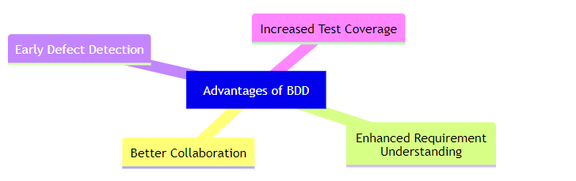

Tarkvaratehnikas on käitumispõhine arendus (BDD) tarkvaraarendusprotsess, mis julgustab tarkvaraprojektis arendajate, kvaliteedi tagamise ekspertide ja klientide esindajate vahelist koostööd.
See julgustab meeskondi kasutama vestlust ja konkreetseid näiteid, et vormistada ühine arusaam sellest, kuidas rakendus peaks käituma. See tekkis testipõhise arenduse (TDD) tulemusel ja võib töötada koos agiilse tarkvaraarendusprotsessiga. Käitumispõhine arendus ühendab TDD üldised tehnikad ja põhimõtted koos ideedega domeenipõhisest disainist ning objektorienteeritud analüüsist ja disainist, et pakkuda tarkvaraarendus- ja haldusmeeskondadele ühiseid tööriistu ja jagatud protsessi tarkvaraarenduse alal koostöö tegemiseks.
Kuigi BDD on põhimõtteliselt idee selle kohta, kuidas tarkvaraarendust peaksid juhtima nii ärihuvid kui ka tehniline ülevaade, eeldab BDD praktika arendusprotsessi toetamiseks spetsiaalsete tarkvaratööriistade kasutamist. Kuigi need tööriistad on sageli välja töötatud spetsiaalselt BDD-projektides kasutamiseks, võib neid vaadelda kui tööriistade erivorme, mis toetavad testipõhist arendust. Tööriistade eesmärk on lisada automatiseerimine üldlevinud keelele, mis on BDD keskne teema.
1. Kust alustada protsessi
2. Mida testida ja mida mitte
3. Kui palju ühe korraga testida
4. Kuidas teste nimetada
5. Kuidas mõista, miks test ebaõnnestub

1. Tänu ühisele keelele on tooteomanikel, arendajatel ja testijatel kõigil projekti edenemisest põhjalik ülevaade.
2. Kuna BDD-d selgitatakse väga lihtsas keeles, on kõigi asjaosaliste jaoks palju lühem õppimiskõver.
3. Olles oma olemuselt mittetehniline protsess, võib käitumispõhine areng jõuda palju laiema publikuni.
4. BDD võimaldab teil kiiresti reageerida kasutajate tagasisidele, et saaksite nende vajadustele vastavaid parandusi teha.
5. Sarnaselt TDD vastuvõtmisele annab BDD kasutuselevõtt teie meeskonnale enesekindluse testikomplekti kujul.
6. BDD võimaldab teil nõudeid selgelt edastada, nii et valesti tõlgendatud nõuete ja aktsepteerimiskriteeriumide tõttu on vähem ümbertegemist.